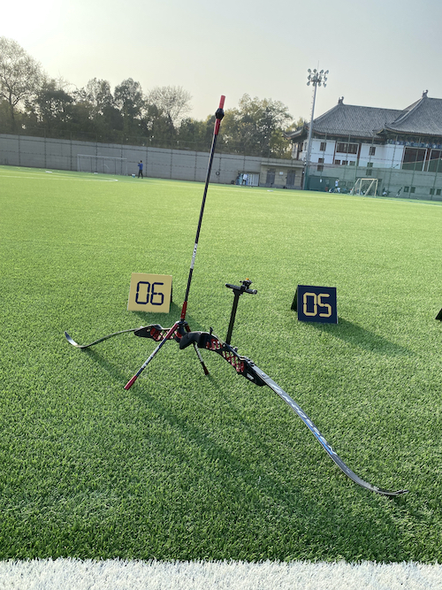

Home
I am a Ph.D. candidate in Data Science at the Data Management Lab led by Professor Lei Zou at the Wangxuan Institute of Computer Technology, Peking University. I am also affiliated with the Academy for Advanced Interdisciplinary Studies, Peking University.
CV
Publications
Linglin Yang, Lei Yang, Yue Pang and Lei Zou, "gCBO: A Cost-based Optimizer for Graph Databases," CIKM Demo Track, 2022.
Yu Liu, Qian Ge, Yue Pang and Lei Zou, "Hop-constrained Subgraph Query and Summarization on Large Graphs," GDMA, 2021.
Yucheng Yang, Yue Pang, Guanhua Huang, and Weinan E, "The Knowledge Graph for Macroe- conomic Analysis with Alternative Big Data," SSRN Journal, 2020.
Personal
Apart from research, I am also an archer who shoots with an Olympic recurve bow. I am on Peking University's student archery team.
My super cool bow is shown below.
It is not an exaggeration that I can hardly live without music. My current favorite musician is Ryuichi Sakamoto.